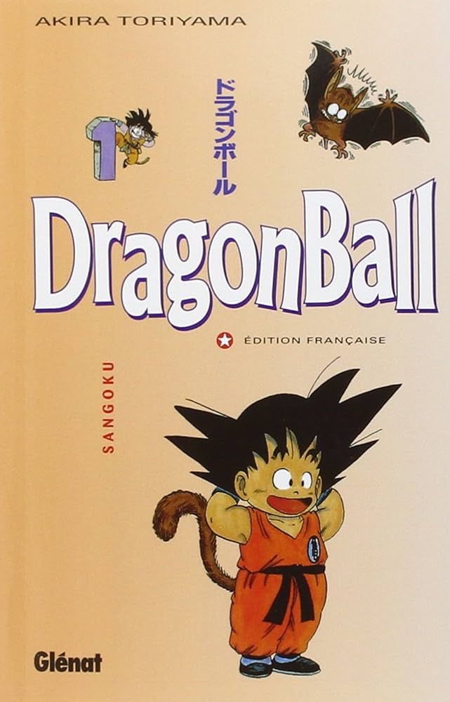
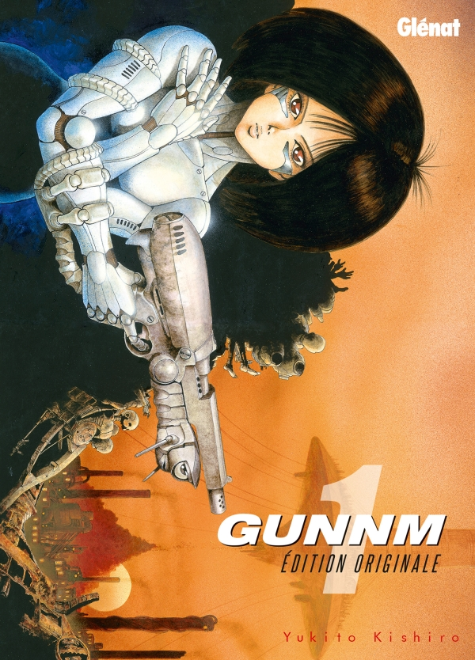
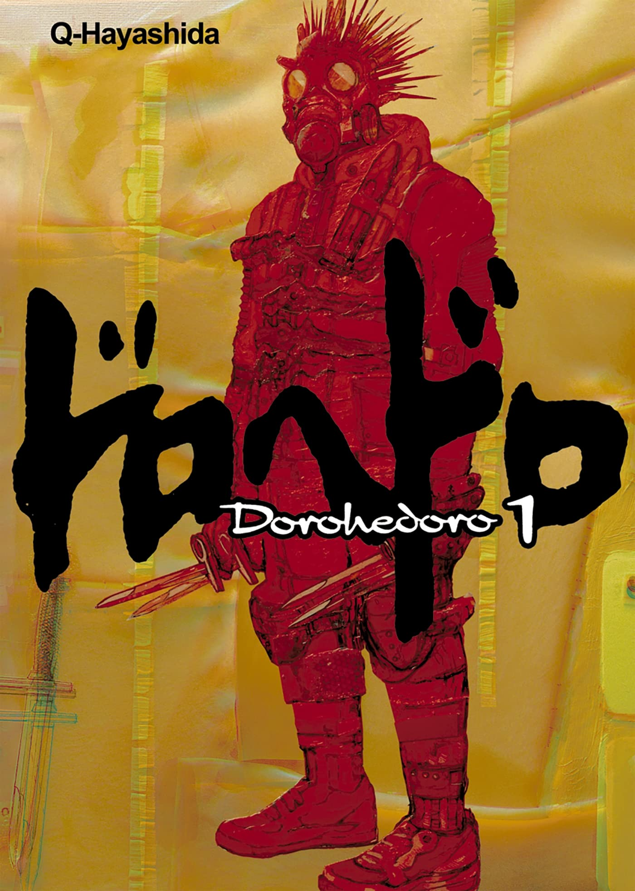
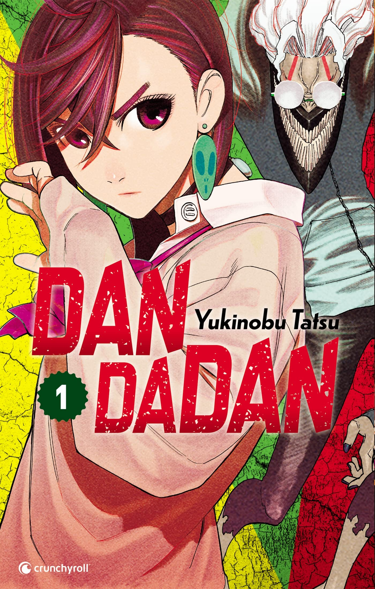
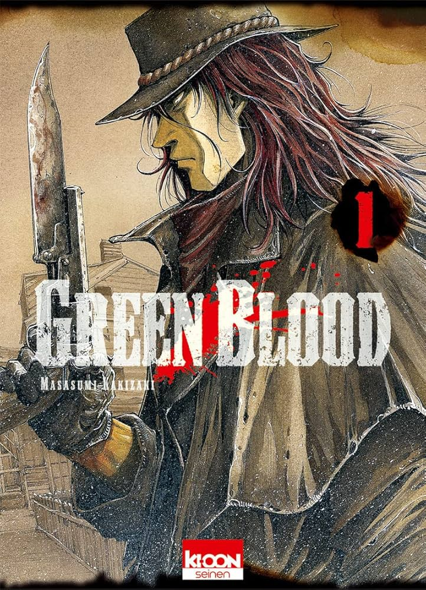
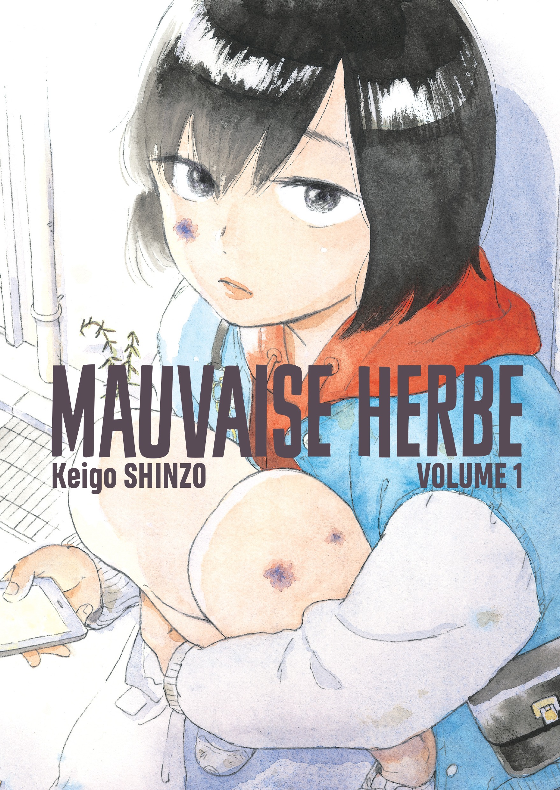
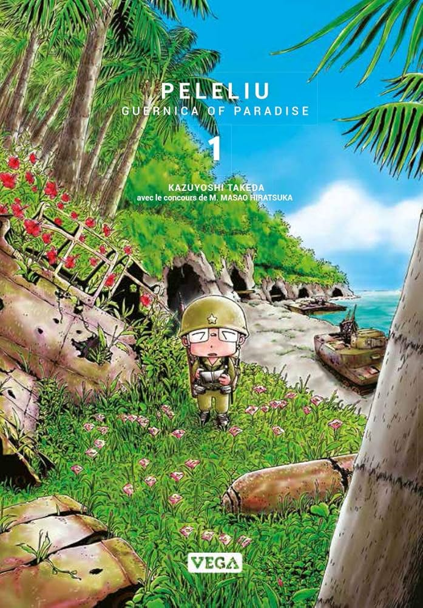
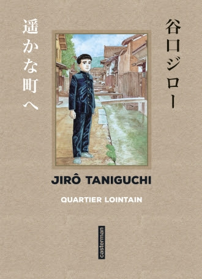
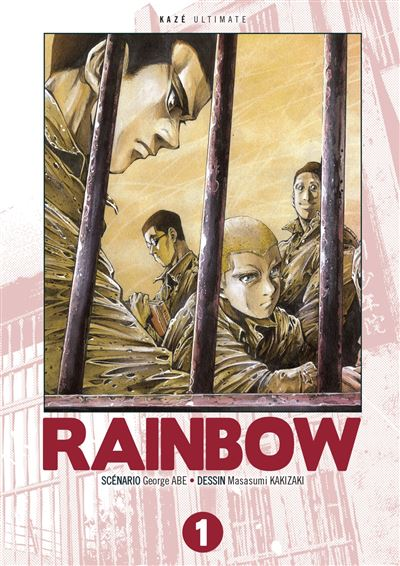

Dragon Ball suit les aventures de Son Goku, un jeune garçon à la force surhumaine...
Dragon Ball

Berserk est un manga sombre et violent racontant la quête de vengeance de Guts.
Berserk

Gunnm suit Alita, une cyborg amnésique dans un monde post-apocalyptique brutal.
Gunnm

Dorohedoro mêle gore, humour et mystère dans un monde étrange peuplé de mages et d'humains mutants.
Dorohedoro

Dandadan est une fusion d’action, d’horreur et de comédie autour des phénomènes paranormaux.
Dandadan

Green Blood raconte l’histoire de deux frères dans l’Amérique violente des gangs et de l’immigration.
Green Blood

Mauvaise Herbe explore la délinquance juvénile et la réinsertion avec émotion et réalisme.
Mauvaise Herbe

Peleliu est un manga historique sur la guerre du Pacifique et ses conséquences humaines.
Peleliu

Quartier Lointain est un récit émouvant de voyage dans le temps et d’introspection sur la vie adulte.
Quartier Lointain

Rainbow suit un groupe de jeunes dans un centre pénitentiaire japonais après la guerre.